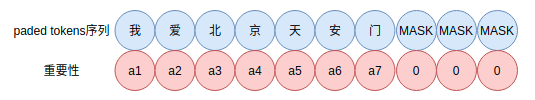

积分梯度：神经网络可视化方法及其在NLU中的应用
积分梯度的原理及其在NLU可视化理解中的应用。
在text-globalmaxpool-visualization和text-attentionpooling-visualization中分别使用GlobalMaxPooling和AttentionPooling在文本分类和匹配中进行可视化的分析和理解。结论是这两种方法都可以有效地捕捉文本中的关键信息。比起AttentionPooling在计算文本中字词的重要性权重的直观性，GlobalMaxPooling则在直觉上较难理解，在通过可视化分析后，发现Pooling后的句向量的每个元素对应着某个词向量的最大值，而该值可以作为词的重要性权重。
类似的实验下，最小方差组合的句向量也能获得差不多的效果，但是GlobalAveragePooling则没有这种性质，它更像是句向量序列求平均后，依赖下游网络的拟合能力来弥补Pooling方法无法很好获取句子中关键信息的缺陷，以便获得不错的预测效果。
这些内容都可以参考过去的文章：
然而，以上方法及其相关改进都是“入侵式”，即为了获得上述可视化效果，模型上强迫你使用GlobalMaxPooling和AttentionPooling等组件。integrated-gradients则是一种比较通用的可视化方法来理解神经网络在具体任务上的表现。本文讲述integrated-gradients的原理，并运用在NLU任务上。
基于梯度思路
对输入样本的输出结果归因是理解模型工作原理的重要方法，假设有样本，
其中$x_{i}$表示其第$i$个分量，$y = f(\boldsymbol{x})$是类别输出，希望知道每个分量$x_{i}$分别对$f(\boldsymbol{x})$的重要性。例如情绪分类，$\boldsymbol{x} $为句子，
喜欢苹果IPHONE4 。功能强大，时尚，手机功能多。沃爱平谷第二轮活动开始啦！12月5日12时前，关注至少五位好友就有机会获得这台伊莱克斯咖啡壶啦！一共有十个名额哦，赶快加入吧！但愿能在这寒冷的冬日给您送上一份温暖与芬芳。
正确标签为”喜悦”，为$y$。现在需要知道$\boldsymbol{x} = [x_{1}, \dots, x_{n}]$中的那些$x_i$对$y$更重要，换言之是求出各个$x_i$对应的重要性权重$a_i$。文本的重要性的可视化示意图，

由于神经网络是使用梯度下降方法进行训练，一个很自然的思路是使用梯度来评估分量的重要性。对于样本$\boldsymbol{x}$（这里指Embedding层的输出），在训练的时候Embedding层会不断被更新（关于Embedding层原理可以参考过去的文章：理解神经网络中Embedding层的原理、简单说说神经网络中的Embedding），相应地样本$\boldsymbol{x}$也会被更新，这个更新用$\Delta \boldsymbol{x}$来表示。一个自然的想法是使用输出的变化$f(\boldsymbol{x} + \Delta \boldsymbol{x})- f(\boldsymbol{x})$来获得不同分量的重要性，于是有
上式是泰勒展开保留一阶近似，这里$[\nabla_{\boldsymbol{x}}f(\boldsymbol{x})]_{i}$表示$\nabla_{\boldsymbol{x}}f(\boldsymbol{x})$的第$i$个分量。因此$[\nabla_{\boldsymbol{x}}f(\boldsymbol{x})]_{i}$可以反映输入分量的重要性。于是分量$x_i$中重要性权重可以表示为，
为什么是绝对值呢？因为直接的梯度只能说明优化上参数更新的敏感性，取值可正可负，取绝对值才能表达重要性。
这里的$\boldsymbol{x} + \Delta \boldsymbol{x}$可以是某种固定不变的东西，例如$\bar{\boldsymbol{x}} = \boldsymbol{x} + \Delta \boldsymbol{x}$表示一个参考样本。这个样本能够让模型判别每个类别大致等可能，比如该样本在Embedding层的输出全为0，那么模型无法判断类别，只能认为每个类别都有可能，于是有
在实现上，这里的$\boldsymbol{x}$最直接的做法是使用Embedding层的输出替代，当然还可以是其他特征编码层，但是其实都没有使用Embedding的直观。
以上思想，说白了就是输出类别$y$对特征各个分量$x_i$的梯度的绝对值作为其重要性权重。
基于梯度的做法有两个问题：
- 进入饱和区梯度不存在（为0），无法反映输入的重要性
- 上述方法终究是基于泰勒展开的近似，无法精确
积分梯度
积分梯度则可以解决这个问题，目标就是寻找一种数学技巧来精确计算$f(\bar{\boldsymbol{x}})- f(\boldsymbol{x})$。其大概思路是对原来的计算化为一个积分恒等式，然后对积分变量引入参变量变换，接着积分获得的结果是对$f(\bar{\boldsymbol{x}})- f(\boldsymbol{x})$的精确估计。具体可参看论文integrated-gradients。
对于第$i$个token的积分梯度权重重要性为，
这里的实现参看了 https://tensorflow.google.cn/tutorials/interpretability/integrated_gradients?hl=en 。
实现和效果
这里可视化使用红色系colormap，颜色越深代表权重越大，反之则越小，如下：
下面是文本分类任务的积分梯度可视化，文字颜色越红越深字权重越大。这个可视化可使用项目text-color-render。
梯度可视化效果
作为对比，我们先看看纯梯度的效果。
新闻分类示例，
正负情感分类，

酒店评价分类，

四情感分类，
积分梯度可视化效果
新闻分类示例，
正负情感分类，
酒店评价分类，

四情感分类，

可以看到，相较于直接使用梯度，积分梯度定位文本的关键信息更准确。尤其是对于正负情感分类示例，两者差别更明显。
应用于数据扩充
既然以上方法能够定位关键字句，那么它可以作为数据扩充方案：新样本的构造来自原原本中关键字句的替换与删减。
从另外一个角度看，这似乎是对抗样本生成的一种方案。
开源地址
文本上的实现和实验代码见：text-integrated-gradients。
补充在图像上的实现和实验：image-integrated-gradients。
总结
分布分享了积分梯度在文本可视化理解中的应用。
参考
[1] https://tensorflow.google.cn/tutorials/interpretability/integrated_gradients?hl=en
[2] https://arxiv.org/abs/1703.01365
[3] text-globalmaxpool-visualization
[4] text-attentionpooling-visualization
[5] https://tensorflow.google.cn/tutorials/interpretability/integrated_gradients?hl=en
转载请包括本文地址：https://allenwind.github.io/blog/13108
更多文章请参考：https://allenwind.github.io/blog/archives/